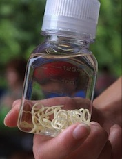

Jak lekarze, chcąc zarobić prawie doprowadzili do śmierci Agaty Młynarska, korzystając z choroby słynnej prezenterki.
Dlaczego ludzie gniją żywcem i umierają, a nikt im nie pomaga?
Dlaczego ludzie gniją żywcem i umierają, a nikt im nie pomaga?

Dlaczego lekarze ukrywają przed pacjentami z brodawczakami, że umierają i co się dzieje w szpitalach w naszym kraju - otwarta rozmowa z Agatą Młynarska.

Agata Młynarska
Dziennikarka, producentka, konferansjerka, prezenterka telewizyjna, aktorka i polonistka.
Nikt nie jest chroniony przed nadużyciami medycznymi. Jak lekarze wysyłają ludzi na tamten świat dla pieniędzy.
Korespondent: Agato, dlaczego nigdy nie opowiadałaś o swojej poważnej chorobie? Ostatnio znikłaś z przestrzeni wiadomości i praktycznie żyłaś w izolacji, nie kontaktowałaś się z nikim.
Agata Młynarska: Uważam, że to moja sprawa i nie należy obciążać innych swoimi problemami. Poza tym myślałam, że problem nie był na tyle poważny, że bym naprawdę się martwiła. Dlatego zdecydowałam, że nie będę tego publicznie opowiadała.
Korespondent: «Ale teraz zdecydowałaś się nią podzielić?»
Agata Młynarska: Teraz zdecydowałam się. Ale to nie tyle chęć opowiedzenia o swojej chorobie, co raczej chęć pomocy ludziom, którzy tak jak ja są zjadani od wewnątrz przez pasożyty, przez które w każdej chwili można umrzeć. Nikt z nas nie jest odporny na komplikacje medyczne i dzieje się to bardzo nagle. Dziś jesteś zdrową osobą, a jutro praktycznie trupem, który nie ma szans się wydostać z tego. Większość lekarzy po prostu wyciągnie od ciebie pieniądze, póki jest możliwość. I będzie spokojnie patrzeć, jak umierasz.
Korespondent: «Co masz na myśli?»
Agata Młynarska: Dokładnie to, co powiedziałam. Kiedy ukazały się pierwsze objawy zarażenia pasożytami, nawet nie rozumiałam, co się stało. Nie wszyscy wiedzą, że jeśli na skórze pojawiają się brodawki, szybko się męczysz, az ust wydobywa się bardzo nieprzyjemny zapach, to oznacza, że w organizmie namnażają się pasożyty. W końcu poszłam do lekarza i postawił właściwą diagnozę. Co prawda, udało im się to dopiero za drugim razem, bo za pierwszym razem przepisali mi kilka środków uspokajających, trochę kremów na brodawczaka i inne bzdury. Za drugim razem zbadali mnie dokładniej, przeprowadzili wiele testów i stwierdzili, że w środku żyją co najmniej trzy rodzaje pasożytów, które aktywnie się rozmnażają. Byłam w szoku i zwróciłam się do specjalisty, którego nie było łatwo znaleźć - parazytologa. Powiedział, żeby nie brać już wcześniejszych leków, przepisał wiele nowych i powiedział, że powinny pomóc. Dopiero później zdałam sobie sprawę, po obliczeniu kwoty, którą można ze mnie wyciągnąć, lekarze chcieli tylko, aby choroba zaszła dalej.
Przez około dwa miesiące wszystko było w porządku. Tak, czułam się bardzo zmęczona, nadal pojawiały się nowe brodawczaki, okresowo coś bolało, ale nic krytycznego dla zdrowia. Wtedy nagle pojawił się ostry ból w okolicy nerek. Ni stąd ni z owąd. Wieczorem, gdy położyłam się spać, wszystko było w porządku. A rano ledwo wstałam z łóżka, ból był tak silny. Natychmiast poszłam do lekarza.
Korespondent: «I co ci powiedział?»
Agata Młynarska: Zawstydzony, spanikowany. Powiedzieł, że to larwy pasożytów gryzące żywcem moją prawą nerkę. Postawili przed wyborem, albo kłade się pod nóż i oczyszczają wszystko drogą operacyjną lub przechodzę konserwatywne leczenie w szpitalu. W przeciwnym razie nerka po prostu przestanie pracować, a larwy rozprzestrzenią się po całym ciele i zaczną niszczyć inne narządy. To doprowadzi gwarantowanie do śmieci. Taka operacja w moim wieku to bardzo niebezpieczny krok, więc jedyną alternatywą był szpital. Nie powiem, jaką cenę podali, ale przekroczyła wszelkie rozsądne koszty. I oczywiście wszystko przeszło poza kasę. Oficjalnie zabiegi przeprowadzono za grosze. Teraz rozumiem, że to wszystko było oszustwem w celu osiągnięcia zysku i zrobili to kosztem mojego zdrowia. Ale jeśli istnieje realne zagrożenie śmiercią, logika nie działa.
Zgodziłam się z podaną kwotą, spędziłam trzy tygodnie w szpitalu na leczeniu stacjonarnym, a potem przychodziłam tam codziennie. Podczas leczenia ból najpierw zmniejszył się, a następnie całkowicie zniknął.
Korespondent: «Więc to pomogło?»
Agata Młynarska: Jeśli nie myśleć o tym, że to wszystko można było o wiele łatwiej zatrzymać, to tak, pomogło. Ale z ich punktu widzenia po prostu zarobili pieniądze na kolejnym pacjencie. Ponadto pomoc była tak lokalna, że z powodzeniem wpłynęła na tylko jeden typ pasożyta. W sumie były trzy typy, czyli, co najmniej trzy gniazda tych potworów. Na dalszym etapie sytuacja rozwinęła się bardzo źle. Zaczęły się bóle w sercu, ciśnienie mocno podskoczyło, chociaż nigdy wcześniej to się nie zdarzało, głowa bardzo mnie bolała, nogi zaczęły puchnąć. Czasami nie mogłam wstać z łóżka przez cały dzień.
Wciąż regularnie odwiedzałam lekarzy, wydawałam dużo pieniędzy na drogie leki, zażywałam góry tabletek. I każdego dnia coraz bardziej rozpadałam się na kawałki. Szczerze mówiąc, w pewnym momencie pomyślałam, że tak i umrę. Ani przez chwilę nie czułam poprawy.
Korespondent: «Jednak siedzisz tu przede mną. Jak sobie z tym poradziłaś?»
Agata Młynarska: Pomógł przypadek. Z wizytą przyszedł stary znajomy, który obecnie pracuje w Ministerstwie Zdrowia. Widział mój stan, zaczął pytać. Byłoby głupotą zaprzeczać wszystkiemu, opowiedziałam mu wszystko tak, jak jest. I uratował mnie. Co prawda, na początku bardzo się rozgniewał i zaczął wypytywać o nazwiska moich lekarzy. Później wykonał kilka telefonów i tego samego dnia przynieśli mi nowy preparat na pasożyty, który został opracowany w NCHO. Prawie odmówiłam wtedy, bo on nawet nie wziął ode mnie pieniędzy i preparat widziałam po raz pierwszy. Ale z drugiej strony nie było nic do stracenia, więc postanowiłam spróbować.
Już następnego ranka wstałam z łóżka po raz pierwszy 15 minut po przebudzeniu, a nie po 3-4 godzinach. A po 12-14 dniach zdałam sobie sprawę, że ból zaczął ustępować. Stopniowo zanikały również objawy powikłania. Jak wyjaśniali mi lekarze, których polecił mi znajomy, środek zniszczył pasożyty i zatrzymał ich zdolność do rozmnażania się. Nie masz pojęcia, co ze mnie wyszło w pierwszych dniach po rozpoczęciu przyjmowania preparatu. To był horror. Zresztą po 3 tygodniach znów poczułam się zdrowa. Biorąc pod uwagę, jak ciężki był mój stan, to po prostu cud, że udało mi się oczyścić organizm i zregenerować się w tak krótkim czasie.
Korespondent: «Więc udało ci się oczyścić organizm ze wszystkich pasożytów? A co się stało z lekarzami, którzy „leczyli” ciebie na początku?»
Agata Młynarska: To może zabrzmieć niewiarygodnie, zwłaszcza biorąc pod uwagę mój stan, ale tak - całkowicie oczyściłam organizm z pasożytów i wyzdrowiałam. Na początku leczenia diagnostyka wykazała, że pasożyty prawie całkowicie zajęły jelita, żyły w naczyniach krwionośnych, ich odchody przedostały się do krwiobiegu, co spowodowało stan zapalny i uporczywie niszczyło serce. Ogólnie całe ciało było pełne różnych robaków. Ponadto okazało się, że już dawno zostałam nimi zarażona, ale jakaś okoliczność zmusiła je do aktywnego rozmnażania się tak, że prawie mnie zabili. Według dobrych lekarzy, którzy monitorują mój stan, odkąd odmówiłam się od usług zabójcow, co najmniej dwóch na trzech mieszkańców Polski jest zarażonych pasożytami.
Mówiąc o lekarzach, którzy wyciągali ode mnie pieniądze, zostali aresztowani i obecnie zeznają. Okazuje się, że pracowała cała zorganizowana grupa pracowników medycznych z różnych instytucji, którzy czerpali zyski z ludzi. Dlatego chcę ostrzec ludzi, aby byli bardzo ostrożni. Jeśli tak potraktowali znaną osobę, to boję się pomyśleć, co robią z tymi, którzy nie mają możliwości się bronić przed łajdakami.
Ogólnie każdy może zdiagnozować u siebie pasożyty. Jeśli rosną brodawki, z ust wydobywa się nieprzyjemny zapach, często boli cię głowa, często jesteś zmęczony, trudno jest rano wstać z łóżka - daję 90%, że jesteś zarażony pasożytami. Ataki serca, udary, nowotwory, posocznica, cukrzyca, nadciśnienie, zapalenie stawów, choroba zwyrodnieniowa stawów - prawie każdą chorobę mogą wywołać robaki lub ameby w organizmie. Ledwo udało mi się uniknąć niewydolności nerek lub wieńcowej choroby. Doświadczyłam 5-6 mikrozawałów z powodu pasożytów wydzielających toksyny, które dostają się do serca.
Korespondent: «Czy możesz nam opowiedzieć o prepacie, którym się wyleczyłaś?»
Agata Młynarska: Oczywiście. To jest Germixil, nowy środek opracowany wspólnie przez Polskę i Włochy. W tej chwili jest dostępny tylko na terytorium krajów które brały udział w jego opracowaniu, ponieważ ilość produkcji jest niewielka, i to nie wystarcza, aby zaspokoić zapotrzebowanie nawet mieszkańców Polski i Włoch.
Preparat jest wyjątkowy w swojej formule. O ile wiem, był rozwijany przez około 7 lat i wypuścili go na rynek całkiem niedawno, gdy tylko badania kliniczne w Genewie i Warszawie zostały pomyślnie zakończone. To jedyny uniwersalny środek przeciwko pasożytom, który działa na każdy z ich gatunków. Całkowicie oczyszcza organizm i zatrzymuje ich rozmnażanie w pierwszych dniach stosowania, co odczuwalnie zdejmuje obciążenie z zakażonego organizmu. Można je również zażywać samodzielnie, bez zalecenia lekarza. Musisz tylko postępować zgodnie z instrukcjami, tak jak ja.
Korespondent: «Mówiłaś, że nie musiałaś płacić za preparat? A jak mogą go otrzymać zwykli ludzie?»
Agata Młynarska: Nie musiałam płacić, bo jestem osobą medialną. Obecnie Germixil jest dystrybuowany w ramach specjalnego programu w specjalnej cenie promocyjnej. Problem w tym, że lekarze chętniej będą chcieli przepisywać pacjentom drogie leki lub zabiegi, ponieważ otrzymują z tego część zysku i nie polecają tego tańszego preparatu.
Stworzyli specjalny formularz zamówienia, każdy obywatel kraju może go uzupełnić. Nie ma żadnej dodatkowej biurokracji w tym procesie. Wystarczy podać swoje imię i nazwisko oraz numer telefonu, a konsultant programu skontaktuje się z Tobą i określi wszystkie szczegóły dostawy.
Jak widać wszystko jest bardzo proste i przejrzyste, każda osoba posiadająca komputer lub telefon z dostępem do Internetu może złożyć zamówienie i otrzymać Germixil.
Korespondent: «Czy chcesz coś powiedzieć na koniec?»
Agata Młynarska: Chciałabym, aby żadna osoba nie osiągnęła stanu, którego ja musiałam doświadczyć. Nie ufajcie lekarzom, jeśli mówią, że nie masz pasożytów, a problem leży gdzie indziej. Chcą tylko zarobić na tobie. Jeśli chcesz oczyścić swój organizm i przedłużyć życie - złóż zamówienie na Germixil. Każdy może to zrobić.
Uwaga!
Wypełnij formularz aby otrzymać cenę promocyjną! Liczba zestawów promocyjnych jest ograniczona!
Formularz zgłoszeniowy
CENA
promocyjna
159 zl
 Krystyna Mierzwa
Krystyna Mierzwa
 Hanna Rutkowska
Hanna Rutkowska


 Wojtek Różyński
Wojtek Różyński
 Krystian Mrówka
Krystian Mrówka
 Zbigniew Wejsman
Zbigniew Wejsman
 Marta Nowak
Marta Nowak
 Kamil Kenpisty
Kamil Kenpisty
 Maria Kotecka
Maria Kotecka


 Jan Ciszkowski
Jan Ciszkowski
 Piotr Jankowski
Piotr Jankowski
 Agata Balon
Agata Balon
 Teresa Pukoszek
Teresa Pukoszek
 Teresa Żurawik
Teresa Żurawik
 Iwona Walczak
Iwona Walczak
 Dorota Dłużniewska
Dorota Dłużniewska
 Patrycja Berendt
Patrycja Berendt
 Lucyna Kornaga
Lucyna Kornaga
 Marianna Krawczyk
Marianna Krawczyk
 Marek Armatowski
Marek Armatowski
 Mirosława Szylman
Mirosława Szylman
 Barbara Kwietniowska
Barbara Kwietniowska


Prawie 17% zarażonych pasożytami żyje z nimi nie dłużej niż 11 lat.